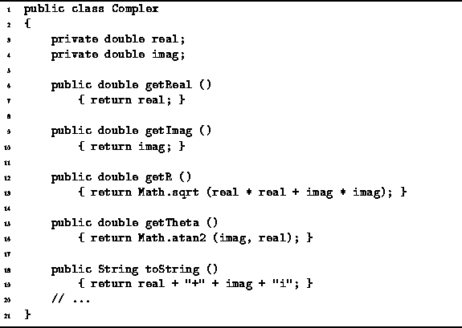

Data Structures and Algorithms
with Object-Oriented Design Patterns in Java
Data Structures and Algorithms
with Object-Oriented Design Patterns in JavaAn accessor is a method that accesses the contents of an object but does not modify that object. In the simplest case, an accessor just returns the value of one of the fields. In general, an accessor performs some computation using the fields as long as that computation does not modify any of the fields.
Program  defines the five accessor methods
of the Complex class--getReal, getImag, getR, getTheta, and toString.
The getReal and getImag methods just return the values
the real and imaginary parts of a complex number.
The getR and getTheta methods return
the polar coordinates of a complex number.
Finally, the toString method returns
a String representation of a complex number.
defines the five accessor methods
of the Complex class--getReal, getImag, getR, getTheta, and toString.
The getReal and getImag methods just return the values
the real and imaginary parts of a complex number.
The getR and getTheta methods return
the polar coordinates of a complex number.
Finally, the toString method returns
a String representation of a complex number.

Program: Complex class accessor methods.
By defining suitable accessors, it is possible to hide the implementation of the class from the user of that class. Consider the following statements:
System.out.println (c.real); System.out.println (c.getReal ());The first statement depends on the implementation of the Complex class. If we change the implementation of the class from the one given (which uses rectangular coordinates) to one that uses polar coordinates, then the first statement above must also be changed. On the other hand, the second statement does not need to be modified, provided we reimplement the getReal method when we switch to polar coordinates.
 Copyright © 1998 by Bruno R. Preiss, P.Eng. All rights reserved.
Copyright © 1998 by Bruno R. Preiss, P.Eng. All rights reserved.